4.3. Selecting Priors¶
4.3.1. An introduction to the gamma probability distribution¶
dpp-msbayes uses the gamma probability distribution for priors on many of the parameters in the model. Thus, before we dive into all the priors of the dpp-msbayes model, it will be helpful to
- introduce some basic characteristics of gamma distributions
- introduce some graphical tools to help us visualize and select gamma priors
4.3.1.1. Gamma basics¶
All of the gamma priors in dpp-msbayes have two parameters: The shape
( ) and scale (
) and scale ( ) parameters.
With this parameterization, the mean and variance of a gamma distribution are
) parameters.
With this parameterization, the mean and variance of a gamma distribution are
 and 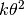, respectively.
and 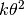, respectively.
As you might have guessed, the shape parameter controls the shape of the
distribution, while the scale parameter controls the scale.
You can think of it this way: all gamma distributions with the same value of
the shape parameter have the same shape, and differences among them in the
scale parameter simply “re-scale” the x-axis.
When the shape is  , the gamma becomes an exponential
distribution with a mean of .
When the shape is less than or equal to 1, the mode, or “peak”, of the
distribution is at zero.
When the shape is greater than 1, the mode is greater than zero
(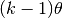).
, the gamma becomes an exponential
distribution with a mean of .
When the shape is less than or equal to 1, the mode, or “peak”, of the
distribution is at zero.
When the shape is greater than 1, the mode is greater than zero
(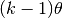).
When thinking about the gamma distribution as a prior, the shape parameter represents how much a priori knowledge we have about a parameter. A larger value means we are more certain about the value of the parameter a priori, whereas a smaller means we are less certain. The scale parameter simply “shifts” the distribution along the x-axis to “fit” our prior expectations.
4.3.1.2. Using R to help visualize gamma priors¶
Let’s say we have prior knowledge that the value of a parameter is around 10.0, and we are pretty sure that it’s greater than 5.0, but less than 15.0. Because, we want the prior to be centered near 10.0, we can take advantage of the fact that the mean of the gamma distribution should be around 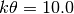. We can use some quick-and-dirty R to get a rough idea of what a gamma prior with this mean and a shape of 1.0 (i.e., an exponential prior) will look like:
> x = rgamma(100000, shape=1.0, scale=10.0)
> hist(x)
This will look something like:

Gamma(1, 10) histogram
With a little more typing in the R prompt, we can get a more accurate illustration of this prior:
> x.max = qgamma(0.999, shape=1.0, scale=10.0)
> x = seq(from=0, to=x.max, by=x.max/1000)
> dens = dgamma(x, shape=1.0, scale=10.0)
> plot(x, dens, type='l')
which will give us something like:

Gamma(1, 10)
We said that we were quite confident the parameter is between 5.0 and 15.0. It looks like this prior puts too much prior probability on values less than 5 and greater than 15. We can use R to see that the prior probability of this parameter being less than 5.0 or greater than 15.0 is about 0.39 and 0.22, respectively:
> pgamma(5.0, shape=1.0, scale=10.0, lower.tail=T)
[1] 0.3934693
> pgamma(15.0, shape=1.0, scale=10.0, lower.tail=F)
[1] 0.2231302
So, it looks like we need to increase our prior knowledge. Let’s try a shape parameter of 2.0 (we need to adjust the scale parameter to 5.0 to keep the mean of 10.0):
> pgamma(5.0, shape=2.0, scale=5.0, lower.tail=T)
[1] 0.2642411
> pgamma(15.0, shape=2.0, scale=5.0, lower.tail=F)
[1] 0.1991483
Hmmm... Still too much prior probability on values outside of 5–15. Let’s try a shape of 10.0:
> pgamma(5.0, shape=10.0, scale=1.0, lower.tail=T)
[1] 0.03182806
> pgamma(15.0, shape=10.0, scale=1.0, lower.tail=F)
[1] 0.06985366
Let’s assume this fits our prior expectation pretty well (i.e., we want to state a priori that the probability of the prior being between 5 and 15 is about 0.9). Let’s take a look at this gamma prior with a shape and mean of 10.0:
> x.max = qgamma(0.999, shape=10.0, scale=1.0)
> x = seq(from=0, to=x.max, by=x.max/1000)
> dens = dgamma(x, shape=10.0, scale=1.0)
> plot(x, dens, type='l')
Gamma(10, 1)
Hopefully this example gives you the necessary tools for choosing the shape and scale parameters for a gamma-distributed prior that reflects your prior uncertainty about a parameter. Next, let’s talk specifically about choosing priors for the parameters of the dpp-msbayes model.
4.3.2. Important priors for the dpp-msbayes model¶
4.3.2.1. Concentration parameter of the Dirichlet process¶
We have to choose a gamma-distributed prior for the concentration parameter
( ) of the Dirichlet process that controls the assignment of taxa
to divergence events.
From the “Dirichlet-process prior on divergence models” section, we know that as the concentration parameter
decreases, we are putting more prior probability on models of divergence that
are more clustered (i.e., models with fewer shared divergence events).
Alternatively, as we increase , we place more prior probability
on divergence models with less co-divergence among taxa.
) of the Dirichlet process that controls the assignment of taxa
to divergence events.
From the “Dirichlet-process prior on divergence models” section, we know that as the concentration parameter
decreases, we are putting more prior probability on models of divergence that
are more clustered (i.e., models with fewer shared divergence events).
Alternatively, as we increase , we place more prior probability
on divergence models with less co-divergence among taxa.
PyMsBayes comes with a program named dmc_dpp_summary.py that helps guide our choice of the prior on the concentration parameter. Let’s say we have sequence data from 10 taxa, and we want to know what value of the concentration parameter corresponds with a prior mean of 5 divergence events. We can use dmc_dpp_summary.py to calclulate this by typing:
$ dmc_dpp_summary.py ncats 5 10
The output should look like:
number of elements = 10
concentration parameter = 3.30149636133
expected number of categories = 5.0
This tells thus that divergence models generated under a Dirichlet process with 10 taxa and a concentration parameter of about 3.3 will have 5 divergence events (parameters) on average. We can confirm this by typing:
$ dmc_dpp_summary.py concentration 3.3 10
Which reports:
number of elements = 10
concentration parameter = 3.3
expected number of categories = 4.99909319002
Ok, that’s useful, but what about the probability of other numbers of events? Well, we can use the --reps option to tell dmc_dpp_summary.py to use simulations to estimate such probabilities:
$ dmc_dpp_summary.py ncats 5 10 --reps 10000
This generates 10000 random divergence models under a Dirichlet process prior, and reports the estimated prior probabilites for the possible numbers of divergence events (it also reports the number of possible divergence models for each number of divergence events):
number of elements = 10
concentration parameter = 3.30149636133
expected number of categories = 5.0
Starting simulations to estimate probabilities...
Using seed 436471208
Estimated probabilities of the number of categories:
p(ncats = 1) = 0.0024 (n = 1)
p(ncats = 2) = 0.0280 (n = 511)
p(ncats = 3) = 0.1012 (n = 9330)
p(ncats = 4) = 0.2240 (n = 34105)
p(ncats = 5) = 0.2912 (n = 42525)
p(ncats = 6) = 0.2048 (n = 22827)
p(ncats = 7) = 0.1080 (n = 5880)
p(ncats = 8) = 0.0348 (n = 750)
p(ncats = 9) = 0.0048 (n = 45)
p(ncats = 10) = 0.0008 (n = 1)
This output tells us, for example, that the prior probability of a divergence model with 2 divergence-time parameters, under a Dirichlet process with 10 taxa and a concentation parameter of about 3.3, is approximately 0.028. It also tells us that there are 511 possible divergence models with 2 divergence events (i.e., 511 different ways of assigning our taxa to 2 divergence events).
Above, we were just assuming the value of the concentration parameter is fixed at 3.3. This is all well and good, but in our dpp-msbayes configuration file, we need to specify the shape and scale parameters for a gamma prior on the concentration parameter. No problem, dmc_dpp_summary.py can help us with that too. If we want to essentially fix the concentration parameter to 3.3, we can specify a very large shape parameter for the gamma prior:
$ dmc_dpp_summary.py ncats 5 10 --reps 10000 --shape 1000
The output will be something like:
number of elements = 10 concentration parameter = 3.30149636133 expected number of categories = 5.0 shape = 1000.0 scale = 0.00330149636133 Starting simulations to estimate probabilities... Using seed 428982720 Estimated probabilities of the number of categories: p(ncats = 1) = 0.0012 (n = 1) p(ncats = 2) = 0.0292 (n = 511) p(ncats = 3) = 0.1104 (n = 9330) p(ncats = 4) = 0.2296 (n = 34105) p(ncats = 5) = 0.2756 (n = 42525) p(ncats = 6) = 0.2076 (n = 22827) p(ncats = 7) = 0.1048 (n = 5880) p(ncats = 8) = 0.0328 (n = 750) p(ncats = 9) = 0.0080 (n = 45) p(ncats = 10) = 0.0008 (n = 1)
As you can see, aside from some estimation error due to a finite number of simulation replicates, the probabilities are nearly identical to our previous prior where the concentration parameter was fixed to 3.3. Notice that dmc_dpp_summary.py now reports the shape and scale parameters (highlighted above); these correspond to the shape and scale parameters of a gamma prior on the concentration parameter. So, if we put the following in our configuration file:
concentrationShape = 1000.0 concentrationScale = 0.00330149636133
we will be using a Dirichlet process prior with a (nearly) fixed concentration parameter of 3.3, which, on average, yields divergence models with 5 divergence events.
Now, let’s say we have 20 pairs of taxa, and we want the prior mean for the number of divergence events to be 15. We can uses dmc_dpp_summary.py to get an idea of what such a Dirichlet process would look like if we essentially fix the concentration parameter to the corresponding value associated with a mean of 15 events:
$ dmc_dpp_summary.py ncats 15 20 --reps 10000 --shape 1000
The output will looks something like:
number of elements = 20
concentration parameter = 25.5940195547
expected number of categories = 15.0
shape = 1000.0
scale = 0.0255940195547
Starting simulations to estimate probabilities...
Using seed 780386083
Estimated probabilities of the number of categories:
p(ncats = 1) = 0.0000 (n = 1)
p(ncats = 2) = 0.0000 (n = 524287)
p(ncats = 3) = 0.0000 (n = 580606446)
p(ncats = 4) = 0.0000 (n = 45232115901)
p(ncats = 5) = 0.0000 (n = 749206090500)
p(ncats = 6) = 0.0000 (n = 4306078895384)
p(ncats = 7) = 0.0000 (n = 11143554045652)
p(ncats = 8) = 0.0004 (n = 15170932662679)
p(ncats = 9) = 0.0008 (n = 12011282644725)
p(ncats = 10) = 0.0080 (n = 5917584964655)
p(ncats = 11) = 0.0216 (n = 1900842429486)
p(ncats = 12) = 0.0664 (n = 411016633391)
p(ncats = 13) = 0.1108 (n = 61068660380)
p(ncats = 14) = 0.1828 (n = 6302524580)
p(ncats = 15) = 0.2072 (n = 452329200)
p(ncats = 16) = 0.1932 (n = 22350954)
p(ncats = 17) = 0.1252 (n = 741285)
p(ncats = 18) = 0.0660 (n = 15675)
p(ncats = 19) = 0.0168 (n = 190)
p(ncats = 20) = 0.0008 (n = 1)
From this output, we can see that the number of possible models of divergence is now enormous (e.g., there are more than 15 trillion ways to assign the 20 taxa to 8 divergence events!!). We also see that by essentially fixing the concentration parameter (i.e., using a large value of 1000 for the shape parameter of the gamma prior on the concentration parameter), we will fail to sample many of the possible numbers of divergence events during the ABC algorithm under reasonable computational limits. In such a case, a smaller value on the shape parameter is probably necessary to make the Dirichlet process more diffuse:
$ dmc_dpp_summary.py ncats 15 20 --reps 10000 --shape 2
number of elements = 20
concentration parameter = 25.5940195547
expected number of categories = 15.0
shape = 2.0
scale = 12.7970097773
Starting simulations to estimate probabilities...
Using seed 619880880
Estimated probabilities of the number of categories:
p(ncats = 1) = 0.0004 (n = 1)
p(ncats = 2) = 0.0012 (n = 524287)
p(ncats = 3) = 0.0048 (n = 580606446)
p(ncats = 4) = 0.0056 (n = 45232115901)
p(ncats = 5) = 0.0088 (n = 749206090500)
p(ncats = 6) = 0.0140 (n = 4306078895384)
p(ncats = 7) = 0.0212 (n = 11143554045652)
p(ncats = 8) = 0.0300 (n = 15170932662679)
p(ncats = 9) = 0.0320 (n = 12011282644725)
p(ncats = 10) = 0.0520 (n = 5917584964655)
p(ncats = 11) = 0.0596 (n = 1900842429486)
p(ncats = 12) = 0.0876 (n = 411016633391)
p(ncats = 13) = 0.0932 (n = 61068660380)
p(ncats = 14) = 0.1092 (n = 6302524580)
p(ncats = 15) = 0.1244 (n = 452329200)
p(ncats = 16) = 0.1264 (n = 22350954)
p(ncats = 17) = 0.1100 (n = 741285)
p(ncats = 18) = 0.0716 (n = 15675)
p(ncats = 19) = 0.0356 (n = 190)
p(ncats = 20) = 0.0124 (n = 1)
We can see from the output above, that with a shape parameter of 2.0 for the gamma prior on the concentration parameter, the prior probability of the number of divergence events is now more spread out.
Important
Given the number of possible divergence models is now over 50 trillion (!!), it is clear that the naive ABC rejection algorithm implemented in msBayes and dpp-msbayes will fail to sample most of these models within reasonable computational limits. Thus, it is questionable whether either method is appropriate when the number of taxa is around 15 or more. If you use either method with this many pairs of taxa, you should run multiple replicates, each with large numbers of samples from the prior, to make sure your estimates are stabilizing as the samples increase within each run, and converging to similar values across runs.
The examples above were to illustrate the tools available to help you select a prior on the concentration parameter. You will need to decide what prior is appropriate to represent your prior expectations for your particular system. Whatever gamma-distributed prior you choose for your data, you need to update your configuration file accordingly:
concentrationShape = 2.0
concentrationScale = 12.797
4.3.2.1.1. An important point about the concentration parameter¶
It is important to note that values of the DPP concentration parameter are always specific to the number taxa. For example, above we saw that for 10 taxa, a concentration parameter of 3.3 corresponded to a prior mean of 5 divergence events. However, when the number of taxa is 20, a concentration parameter of 3.3 does NOT correspond to a prior mean of 5:
$ dmc_dpp_summary.py concentration 3.3 20 number of elements = 20 concentration parameter = 3.3 expected number of categories = 6.90365997028
It actually corresponds to a prior mean of about 6.9. So, you cannot simply choose your “favorite” prior for the concentration parameter and apply it blindly for all datasets. When you are analyzing a dataset with a different number of taxa, you need to reassess your prior on the concentration parameter.
4.3.2.2. Population size¶
Another important parameter for which we need to choose a prior is the effective population size of the ancestral and descendant populations in the model. See the following sections for more information about the role of the population-size parameters in the model and how to control them:
The effective population sizes are scaled by the per-site mutation rate
( ): 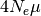.
Thus, for example, if we expect, a priori, that our populations are no bigger
than 100,000 individuals, and the per-site mutation rate is no faster than
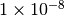 per generation, then we do not expect the effective
population size to exceed 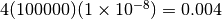.
): 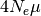.
Thus, for example, if we expect, a priori, that our populations are no bigger
than 100,000 individuals, and the per-site mutation rate is no faster than
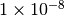 per generation, then we do not expect the effective
population size to exceed 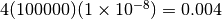.
Note
The per-site mutation rate should be in units of generations.
If we expect the effective population size to be less than 0.004, but we do not know how much less, perhaps an exponential distribution (i.e., a gamma distribution with a shape parameter of 1) is a reasonable prior.
Let’s use some of the tools we learned about in the section introducing gamma distributions to choose a reasonable prior for this example. A gamma with a shape parameter of 1 is an exponential, but we still need to choose our scale parameter. Let’s see how much of our prior probability will fall on values greater than 0.004 if we use an exponential with a mean of 0.002. Because the shape parameter is 1, this means the scale parameter is simply 0.002 (remember, the mean is simply the product of the shape and scale):
> pgamma(0.004, shape=1.0, scale=0.002, lower.tail=F)
[1] 0.1353353
Perhaps this seems like too much prior probability greater than 0.004; let’s try a scale parameter of 0.001:
> pgamma(0.004, shape=1.0, scale=0.001, lower.tail=F)
[1] 0.01831564
If this seems to fit our prior expectations, we can take a look at this prior:
x.max = qgamma(0.999, shape=1.0, scale=0.001) x = seq(from=0, to=x.max, by=x.max/1000) dens = dgamma(x, shape=1.0, scale=0.001) plot(x, dens, type=’l’)
which will give us something like:

Gamma(1, 0.001)
If you feel you have more prior knowledge than is represented by this exponential (for example, perhaps you expect the effective population size to be greater than 0.0005), then you can increase the shape parameter accordingly, until you end up with a distribution that fits your prior uncertainty. You can use the examples in the section introducing gamma distributions as a guide for doing this. When you choose your prior distribution, simply update your configuration file accordingly:
thetaShape = 1.0
thetaScale = 0.001
4.3.2.3. Divergence time¶
We also need to choose a gamma-distributed prior for the divergence times of the pairs of populations. See the following sections for more information about how time is scaled in msBayes and dpp-msbayes:
For now, let’s assume we are using the timeInSubsPerSite = 1 setting so that time is (reasonably) scaled by the expected substitutions per site. Let’s say we are confident that all of our pairs of taxa diverged within the past 10 million generations, and we expect their per-site mutation rates are no faster than per generation, then the number of substitutions per site that have accumulated since the populations diverged is probably no greater than 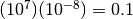.
If we expect most of our species pairs diverged recently, but probably no greater than 0.1 substitutions-per-site ago, perhaps an exponential prior (i.e., a gamma prior with a shape of 1) is a reasonable choice. Again, let’s figure out a value for the scale parameter that limits the prior probability of values greater than 0.1 to meet our prior expectations. Let’s try scale of 0.05:
> pgamma(0.1, shape=1.0, scale=0.05, lower.tail=F)
[1] 0.1353353
If ~ 0.14 is seems like too much prior probability for values greater than 0.1, then we can reduce the scale parameter until we find a value that is in line with our prior uncertainty about divergence times. Perhaps a scale of 0.03 (prior probability of 0.036 for values greater than 0.1) is a good “fit.”
Again, if you have more prior certainty about divergence times, increase the shape parameter and adjust the scale parameter until you find a distribution that fits your prior knowledge. When you choose your prior distribution, simply update your configuration file accordingly:
tauShape = 1.0
tauScale = 0.03
Note
If we use the timeInSubsPerSite = 0 setting, time is scaled by the mutation rate AND the mean of the prior on population size (thetaShape/thetaScale). We would select our divergence-time prior as above, but we would have to make sure we are working in units of 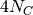 generations... and if we change the prior on population size (thetaShape/thetaScale), we have to change the prior on divergence times accordingly. See the section about the time scale setting for more information about such scaling. However, there is no reason to scale time by both the mutation rate and the prior on population size, other than to make things more difficult.
4.3.2.4. Bottleneck proportions¶
We have the option of specifying a beta-distributed prior to control the magnitude of post-divergence bottlenecks in the descendant populations. Please see the following sections for more information about the role of the bottleneck parameters in the model and how to control them:
If we want to remove bottlnecks from the model, we update our configuration file to:
bottleProportionShapeA = 0
bottleProportionShapeB = 0
The beta distribution is a very flexible continuous probability distribution
for variables between 0 and 1.
Because the bottleneck parameters are proportions (the proportion of the
effective population size that remains during the bottleneck), a
beta-distributed prior is a suitable choice.
The beta distribution has two shape parameters  and
and
 .
When and are both 1, the beta converges
to a uniform distribution.
We can confirm this with a little R code:
.
When and are both 1, the beta converges
to a uniform distribution.
We can confirm this with a little R code:
> x = seq(0, 1, by=1/1000)
> dens = dbeta(x, shape1=1, shape2=1)
> plot(x, dens, type='l')
which should look like a nice uniform distribution from 0 to 1:

Beta(1, 1)
If we want to place more prior weight on larger proportions (i.e., the bottlenecks are less severe),
we can increase . For example, let’s try 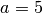 looks like:
> x = seq(0, 1, by=1/1000)
> dens = dbeta(x, shape1=5, shape2=1)
> plot(x, dens, type='l')
which should look like:

Beta(5, 1)
Likewise, we could place a strong prior on severe bottlenecks (i.e., small proportions) if
we increase . For example, let’s try  :
:
> x = seq(0, 1, by=1/1000)
> dens = dbeta(x, shape1=5, shape2=1)
> plot(x, dens, type='l')
which should look like:

Beta(1, 10)
and can be any positive number, and a beta
distribution of just about any shape is possible, so you have a lot of
flexibility to represent your prior knowledge about bottleneck
severity.
If, for example, the beta( )
distribution is a good match to your prior uncertainty, you would
specify this prior in the configuration file by:
)
distribution is a good match to your prior uncertainty, you would
specify this prior in the configuration file by:
bottleProportionShapeA = 5
bottleProportionShapeB = 1

{kind=link}